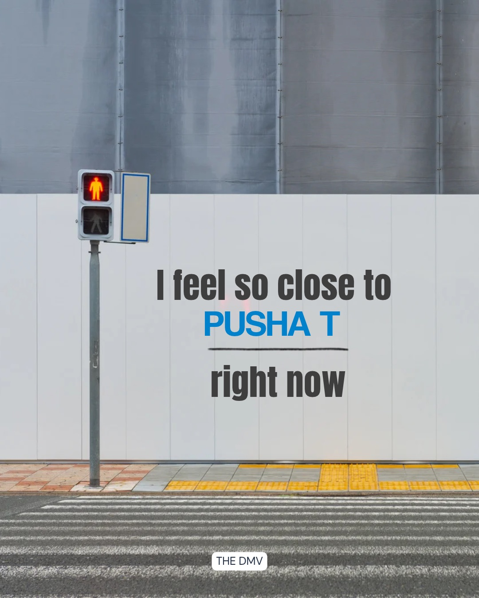
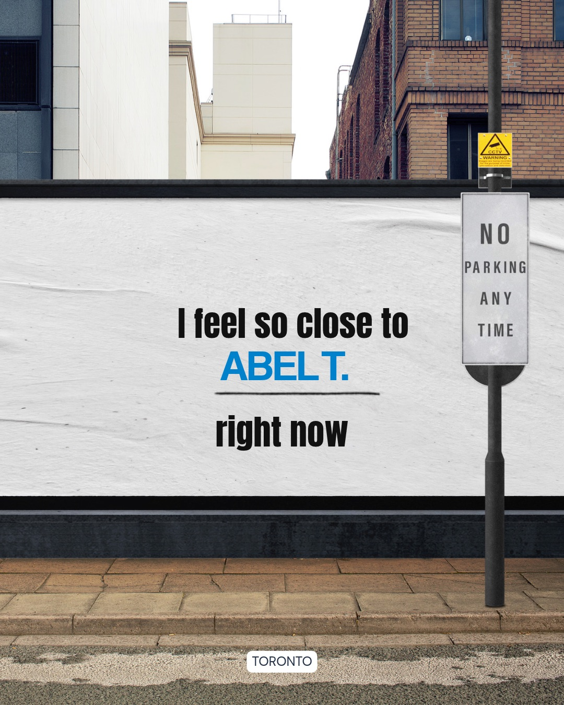

H1 kayleen ramos
(want this exactly like h1 but smaller and not strong) H2 Journalism and Marketing Portfolio
H2 about me
I am an undergraduate journalism student in my junior year at the University of Maryland. I am passionate in politics, pop culture, and weaving new and past phenomenons to grasp the attention of different generations and cultures! I am currently a freelancer for La Voz Latina and Her Campus at the University of Maryland.
When I am not writing or studying, you can find me keeping up to date with the news, finding new recipes to try for dinner, playing with my dogs, or thrifting vintage pieces!

H2 mock campaign example
CALVIN HARRIS X NORTH AMERICA TOUR
Calvin Harris is coming to North America for a tour! To further the excitement, I think creating hints for who he might be bring on tour or what songs he might play may strengthen the anticipation and engagement with his fanbase.
Given that he rarely reveals information about his upcoming performances, creating these hints can generate buzz and keep fans engaged. Depending on the state that he is in, the hints can be tailored to specific regions or audiences.
For instance, since he is performing in the DMV area, highlighting a popular local artist he has collaborated, like Pusha T, can create a sense of local connection and further build up the excitement for the concert in an area he has not headlined a solo tour in the North America before, especially in the Washington, D.C. area.
Similarly, for other regions, the hints can be adapted to reflect local interests and cultural nuances.For example, Abel T. aka The Weeknd,works perfectly for the Toronto venue as he has strong ties to Canada and international support as one of the most popular artists in the world.
Having local art pieces would encourage fans to write their own names on the pieces which would generate more photos of the piece and advertise the tour further for Harris.
To ensentivize fans, Harris could send out a hint letting fans know to be on the "lookout" for who may join him on stage or what songs he might put on the setlist.
All advertisements were made using Canva Pro.



H2 writing example
 "The Fluctuating Relationship between President Trump and Four Latin American and Caribbean
Countries"
"The Fluctuating Relationship between President Trump and Four Latin American and Caribbean
Countries"
In this political piece, I analyze the narrowing allyship between President Donald Trump and four Latin American and Caribbean countries.
I researched the statements, policies, social networks, and public appearances of each leader to understand their perspectives and the impact of Trump's approach on regional dynamics with Latin America and Carribean countries at large.
H2 resume
- University of Maryland in College Park, Maryland
- Montgomery College in Montgomery County, Maryland
- Damascus High School in Damascus, Maryland
- Personal Assistant, Social Media Marketer, Data Entry Specialist, and Payroll Assistant
- Assist in processing payroll for employees on a bi-weekly basis, ensuring accurate and timely payment
- Perform research tasks such as gathering data or compiling reports to support decision-making processes for President of company
- Organize President's daily schedule to optimize time for maximum productivity and balance
- Created and manage social media accounts for company and President to maximize networking and market to different organizations
- K-12 Tutor and Officer
- Tutored Students in English, Spanish, Science and Math among other individualized subjects
- Managed schedules for tutoring sessions for various tutors and students
- Communicated with parents and guardians regarding individual student progress and answered questions or concerns surrounding academics or scheduling conflicts
- Managed meetings on Zoom
- Elementary School Page Volunteer
- Maintatained cleanly space in library and librarian office
- Prepared materials for students for upcoming lessons
- Processed student library returns in a timely manner
- Restocked and organized shelves based on individualized school system
education
Aug 2024 - Present
Journalism Major with prior experience in Psychology
3.806 GPA
2026 Office of Multi-Ethnic Student Education (OSME) Academy of Academic Excellence Award Recipient
Freelance Member at La Voz Latina and Her Campus
Aug 2021 - May 2024
Social Science and Administrations Major with a Concentration in Psychology
3.42 GPA
2x Deans List Recipient and Social Justice Inclusive Leadership Program Recipient
Psychology Club Member and Minority Scholars Program Member
Aug 2017 - May 2021
High School Graduate
3.44 GPA
Maryland Seal of Biliteracy Award Recipient and Damascus Senior Award Recipient
experience
LP Construction
Washington DC-Baltimore Area
Jun 2022 - Present | Hybrid
Moco Virtual Tutoring
Montgomery County, Maryland | Remote
Dec 2020 - May 2021
Montgomery County Public Schools
Damascus, Maryland | Onsite
Mar 2019 - Dec 2019
skills
Spanish, Canva, Microsoft Office, Google Workspace, AP and MLA Style, LPC Tracker, Social Media Sites, etc.
certifications and awards
Multi-Ethnic Student Education Academy of Academic Excellency Award Recipient, 2x Deans List Recipient, and Maryland Seal of Biliteracy Award Recipient
Currently pursuing certifications on HubSpot and Google